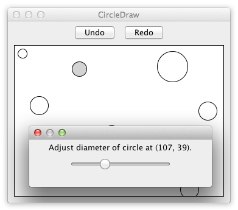

Challenge
Undo/redo, custom drawing, dialog control.
Criteria
- Build a frame containing an undo and redo button as well as a canvas area underneath.
- Left-clicking an empty area inside the canvas will create an unfilled circle with a fixed diameter whose center is the left-clicked point.
- The circle nearest to the mouse pointer such that the distance from its center to the pointer is less than its radius, if it exists, is filled with the color gray.
- The gray circle is the selected circle C. Right-clicking C will make a popup menu appear with one entry "Adjust diameter..". Clicking on this entry will open another frame with a slider inside that adjusts the diameter of C. Changes are applied immediately. Closing this frame will mark the last diameter as significant for the undo/redo history.
- Clicking undo will undo the last significant change (i.e. circle creation or diameter adjustment).
- Clicking redo will reapply the last undone change unless new changes were made by the user in the meantime.
Circle Drawer's goal is, among other things, to test how good the common challenge of implementing an undo/redo functionality for a GUI application can be solved. In an ideal solution the undo/redo functionality comes for free, i.e. it just comes out as a natural consequence of the language / toolkit / paradigm. Moreover, Circle Drawer tests how dialog control, i.e. keeping the relevant context between several successive GUI interaction steps, is achieved in the source code. Last but not least, the ease of custom drawing is tested.
Dialog control is explained in more detail in the paper Developing GUI Applications: Architectural Patterns Revisited starting on page seven. The term describes the challenge of retaining context between successive GUI operations.

Code
After opening a code link below, hit the '.' key to open GitHub's browser editor for improved reading experience.